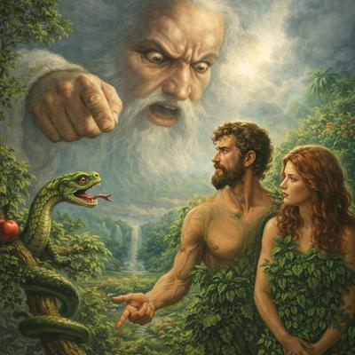

Uno de los mitos fundacionales más influyentes de las religiones abrahámicas, es el relato de Adán y Eva y los supuestos castigos impuestos por «Dios» después de que comieran del fruto prohibido. Este episodio no sólo pretende explicar el origen del mal en el mundo, así como el sufrimiento y la muerte, sino también justificar jerarquías sociales, el dolor humano y la necesidad de un Redentor. El problema es que, cuando se analiza el relato desde la biología moderna, el mito no sólo se desmorona, sino que se vuelve francamente ridículo.


Veamos uno por uno los «castigos» que «Dios» impuso en el Jardín del Edén:
-
La serpiente: ¿castigada por evolucionar correctamente?
Según el Génesis, la serpiente fue «maldita entre todos los animales», condenada a arrastrarse sobre su vientre y a comer polvo, lo cual, desde la biología, no es más que una colección de disparates.
Primero: no es cierto que la serpiente sea un animal maldito, ni biológicamente inferior, ni castigado. Las serpientes son reptiles altamente especializados, exitosos desde el punto de vista evolutivo, con adaptaciones sofisticadas como detección infrarroja, colmillos venenosos y un sistema locomotor extraordinariamente eficiente.
Segundo: arrastrarse no es un castigo, sino simplemente una forma de locomoción producto de la evolución. Gusanos, babosas, larvas y muchos otros animales se desplazan de manera similar, sin haber «pecado» previamente. Si arrastrarse fuera un castigo, el reino animal sería una penitenciaría.
Además, la pregunta obvia es: ¿cómo se movía la serpiente antes del castigo? ¿Tenía patas? ¿Alas? ¿Daba saltos? La Biblia no lo explica, porque el autor jamás pensó en términos biológicos.
Tercero: las serpientes no comen polvo. Son estrictamente carnívoras. Su dieta incluye una amplia variedad de presas como roedores, aves, reptiles, anfibios, peces, huevos e invertebrados, adaptándose según la especie y tamaño. Por lo que el «comerás polvo», no es más que una «metáfora» para lectores poco exigentes.
Cuarto: no existe ninguna enemistad biológica entre serpientes y mujeres, ni entre serpientes y humanos en general. Las serpientes no distinguen la sexualidad humana, ni odian a nadie, y por cierto, tampoco hablan ni razonan, lo que convierte toda la escena bíblica en una fábula, no en un hecho real.
-
Eva y el parto: cuando la obstetricia contradice a «Dios»
La Biblia afirma también que el dolor del parto es un castigo divino impuesto a la mujer. Pero desde la biología evolutiva esta afirmación es sencillamente falsa. El dolor del parto que experimentan las mujeres no es ningún castigo, sino consecuencia directa de dos procesos evolutivos clave:
La bipedestación: al caminar sobre dos piernas, la pelvis humana se estrechó.
El aumento del tamaño cerebral: los bebés humanos nacen con cabezas grandes.
El resultado es un canal de parto complicado. No un castigo, sino resultado de la evolución.
Además, otras hembras del reino animal también experimentan partos difíciles y dolorosos, como los chimpancés, hienas o cetáceos, y nadie supone que estén pagando una deuda moral con ninguna deidad.
Y viene aquí el golpe final a este mito: desde la década de 1930, la ciencia eliminó el «castigo divino» mediante la anestesia epidural, que bloquea el dolor en la región pélvica durante el parto. Si el dolor fuera un castigo impuesto por «Dios», bastó una aguja y conocimiento médico para anularlo. No parece haber sido un castigo muy efectivo.
-
Adán y el trabajo: un castigo que nadie cumple
Según Génesis, el hombre fue condenado a trabajar la tierra «con el sudor de su frente». El problema es que la mayoría de los hombres que han existido jamás han cultivado la tierra. Y aparte de eso, hoy contamos con tecnología suficiente como que los cultivos no sean muy complicados. Hoy disponemos de:
Agricultura mecanizada.
Producción industrial de alimentos.
Hidroponía.
Automatización.
Por lo que muchas personas que jamás han sembrado una semilla en su vida y nunca lo harán.
Pero por otra parte, tampoco es correcto calificar el trabajo como un castigo, ya que es una actividad natural que realizamos para obtener recursos. Además, todos los animales trabajan: lo hacen por ejemplo las aves buscan alimento, construyen nidos y crían polluelos, aunque según Jesús no hacen nada, y su Padre celestial siempre las alimenta (Mateo 6:26).
Si trabajar fuera un castigo divino, entonces toda la biosfera estaría castigada, lo cual vacía por completo la idea de castigo moral.
-
La muerte y la expulsión del Edén: el castigo más absurdo
Finalmente «Dios» expulsa a Adán y Eva del Jardín del Edén, para impedirles acceder al árbol de la vida, es decir, a la inmortalidad. Esto, desde la biología, es quizá el error más grande de todos. Porque morir no es un castigo, es una propiedad fundamental de la vida. Todos los organismos vivos mueren: bacterias, plantas, insectos, animales. La muerte es necesaria para la evolución, el recambio genético y el equilibrio ecológico. Sin muerte, no hay vida compleja sostenible.
Por otra parte, encuestas modernas demuestran que no todas las personas desean ser inmortales. Por lo que la inmortalidad no es un premio universal, sino una fantasía cultural. La idea de que la muerte entró al mundo por un error humano es científicamente absurda: la muerte existió millones de años antes de que apareciera el ser humano.
Y aquí tenemos el colapso final: sin pecado original, no hay redención. Cuando el mito de Adán y Eva se desmonta, ocurre algo inevitable: se derrumba también la teoría religiosa del origen del mal.
Si no hubo pecado original…
No hay culpa heredada.
No hay caída.
No hay castigo.
No hay deuda moral.
No hay necesidad de un Salvador ni de un Redentor.
O sea que toda la arquitectura teológica del cristianismo depende de un relato que la biología, la antropología y la lógica destruyen sin esfuerzo.
En resumen, digamos que Génesis 3 definitivamente no explica el mundo, lo caricaturiza. Los «castigos» de «Dios» que describe no son más que intentos primitivos de justificar fenómenos naturales que hoy comprendemos perfectamente. Pero la biología no necesita pecados, serpientes parlantes ni dioses castigadores. La vida es compleja, imperfecta, finita… y precisamente por eso es real. Y si la ciencia puede anular los castigos divinos con anestesia, tecnología y conocimiento, quizás el verdadero pecado no fue comer de un fruto, sino seguir creyendo en este mito.
[Godless Freeman]
Comentarios
Comments powered by Disqus